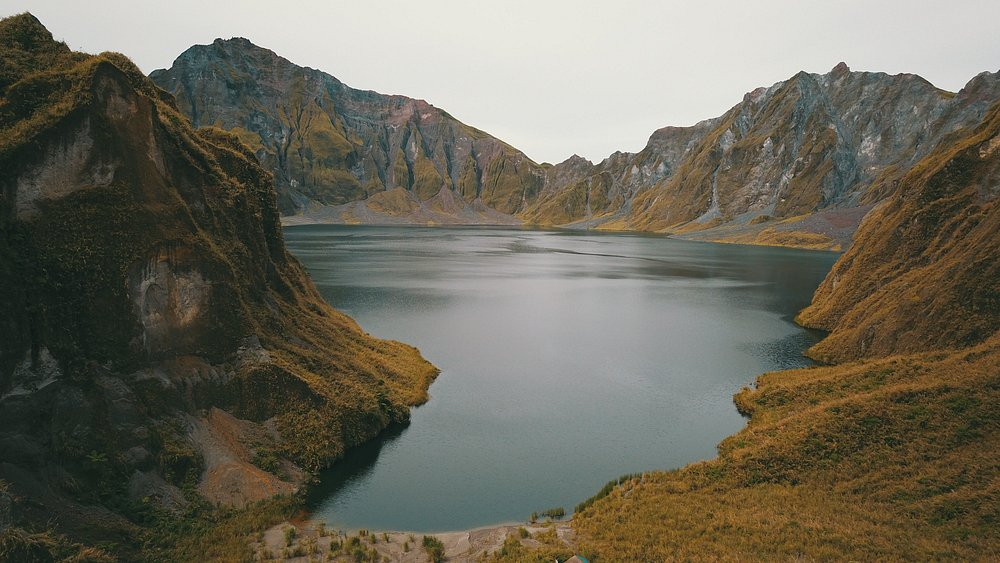
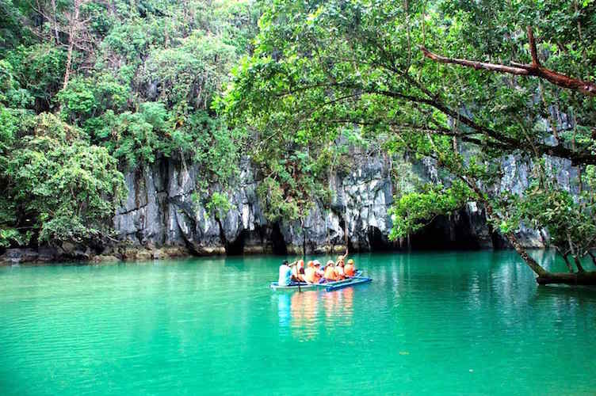
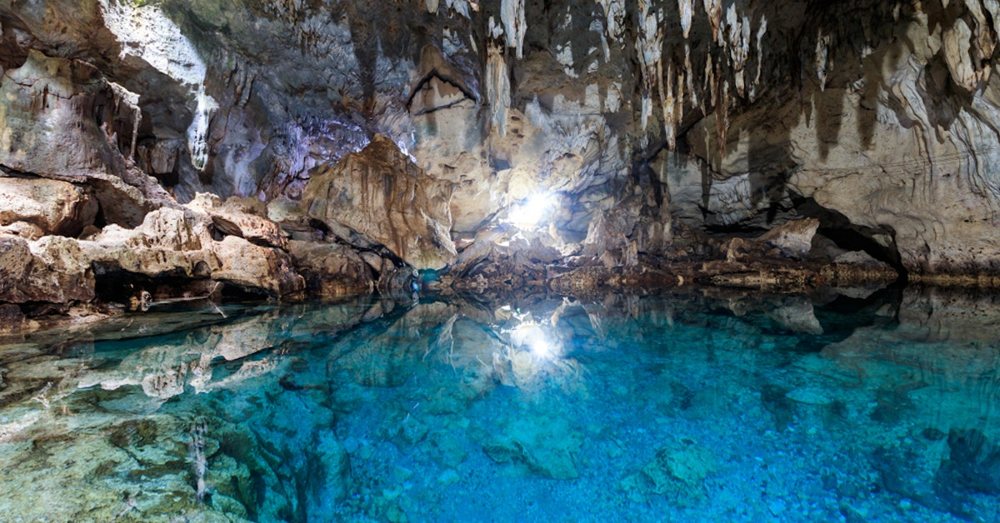
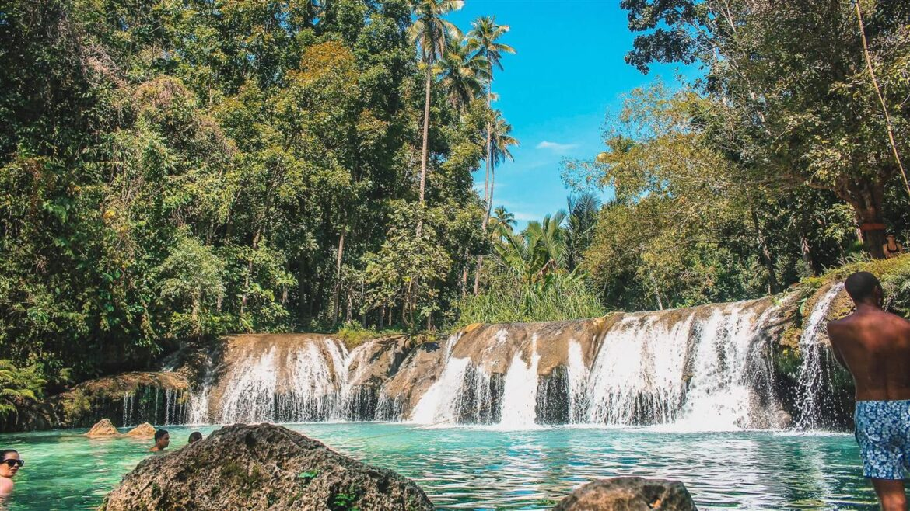
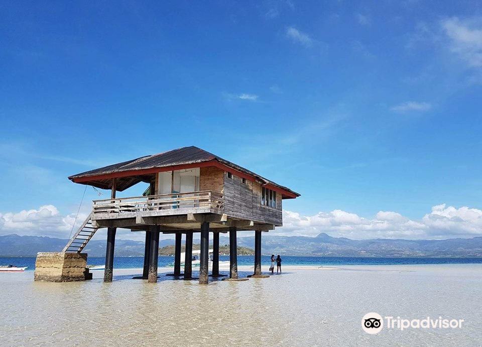
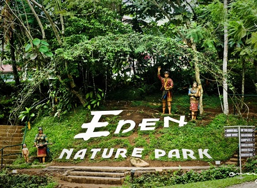
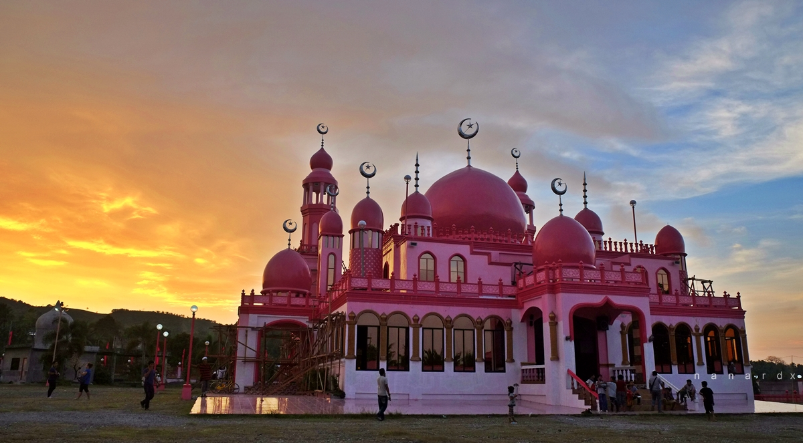
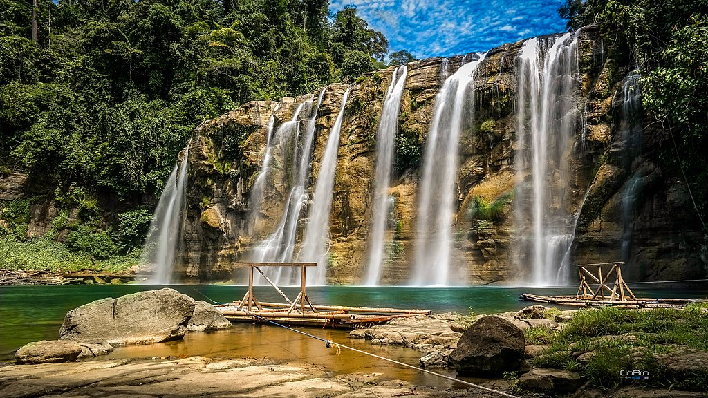

.
Tourist Spot

TOURIST ATTRACTIONS IN LUZON
1. Mt. Pinatubo

Near the tri-point of the Philippine provinces of Zambales, Tarlac, and Pampanga.
2. Batad Banaue Rice Terraces
 Nueva Vizcaya - Ifugao - Mountain Province Rd, Banaue, Ifugao
Nueva Vizcaya - Ifugao - Mountain Province Rd, Banaue, Ifugao
3. Puerto Princesa Underground River

Puerto Princesa, Palawan
TOURIST ATTRACTIONS IN VISAYAS
1. Hinagdanan Cave

Bingag, Dauis, Bohol
2. Cambugahay Falls

Siquijor Circumferential Road, Lazi, Siquijor
3. Manjuyod Sandbar

Manjuyod, 6208 Negros Oriental
TOURIST ATTRACTIONS IN MINDANAO
1. Eden Nature Park

Toril, Davao City, 8000 Davao del Sur
2. Pink Mosque

Datu Saudi-Ampatuan, Maguindanao
3. Tinuy-an Falls

Borboanan, Bislig, Surigao del Sur